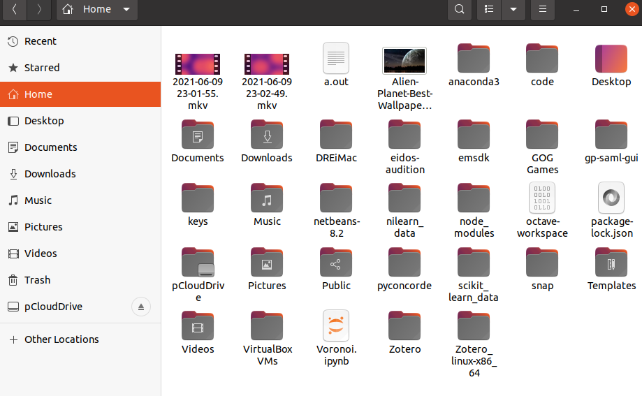
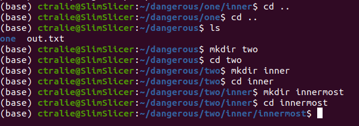
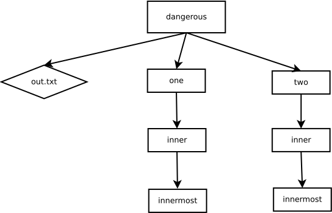
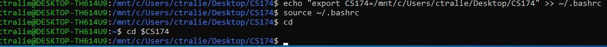

The Terminal And Files
Chris Tralie
Table of contents
We're going to talk now about a new programming environment which may seem daunting at first, but which is incredibly powerful and which will actually make things simpler for us. It's known as the "command line" or the "shell" or the "terminal," and it's a fully text-based way of interacting your computer (in fact, it used to be the only way to interact with the computer). Only text, you say?? How could this make things easier? Well we won't need to point and click, and we'll be able automate things and totally slice through data. There are also things that we will only be able to do with the terminal, as you will see.
Basic File/Folder Navigation
Commands covered: pwd, ls, mkdir, cd, echo
So, without further ado, let's fire it up. You can follow along on your own computer if you'd like. Here's what my terminal looks like when I first open it on my laptop running Ubuntu Linux

Most lay people would throw up their hands and assume their computer was broken at this point. But it won't take us long to do a lot. Let's start by typing pwd and pressing ENTER
pwd stands for "print working directory." In this case, we see that we're in the directory /home/ctralie (this will vary slightly on your computer depending on what operating system you're using and what your username is). But regardless, I see I'm in my home directory.
Now let's type ls, which stands for "list directory." We see the following:
This is showing us all of the files that are in this directory. Just to check, this is exactly what we see in the regular file browser:

Now let's make a new directory within this directory which we will use as a sandbox. I'll call it dangerous. I'll use the mkdir command
Now let me go into this directory in the terminal. I'll use the cd, or "change directory," command at this point
As a sanity check, when we type pwd, we now see we're one directory "further in" at /home/ctralie/dangerous
Now let's explore a different kind of command type echo "Test string" into the terminal
The echo command simply prints back out exactly what we pass to it. Seems like kind of a trivial thing, but a powerful use case emerges when when we redirect its output to a file. In particular, when we type
echo "Test string" > out.txt
this sends the output of the echo command to the file out.txt. If this file doesn't exist, it's created with the contents "Test string". If it does exist, it's overwritten with these contents (so we should be careful with this). If we want to simply add something to the end of a file, or append, we instead type
echo "Something new" >> out.txt
So a one > is overwrite, and two > > is append
Let's examine one more interesting case of echo. Type echo $PATH. On my computer, this prints out the following

$PATH is what's known as the "path variable" (a $ in the terminal means variable) and it stores a list of directories where we can find all possible commands to run in the terminal. In fact, this gives us a new perspective on the terminal commands. Every command you run is actually a program which exists in one of these directories. When you type the command, it looks through all of the directories in PATH to see if it can find a program with a matching name, and if it does, it runs it. For example, the pwd command is actually a program living in /usr/bin/pwd. So I could run it this way
One upshot is that sometimes if you install new software that's not in one of the paths, you'll have to add a new directory to the PATH variable. Another upshot is that when you make new programs, you're essentially just programming in new commands to the terminal!
File Trees
New commands: find
Now that we know a little bit about the terminal, let's setup some more files and folders in our dangerous directory to elucidate file hierarchies a bit more:
At this point, when we type ls, we see nothing. However, when we type ls -all, which is often used to look at hidden files, we see the following two files . and ..
Actually, these are folders, not files. If we try to cd into ., nothing happens. However, if we cd into .., we actually go "up one" directory
Let's keep doing this and create another nested sequence of folders parallel to the one we just created
At this point, it would be helpful to draw a picture of what we've made as a tree data structure. We'll draw each folder as a box, and we'll draw an arrow from each folder to files/folders that are in it.

If we also superimpose the . and .. arrows, we get the following
This picture whos us how having a hierarchy of folders allows us to have duplicate file and foldernames (e.g. there are two copies of both inner and innermost). It also gives us a very nice, visual way to construct relative file paths. For instance, we're currently in the leftmost directory called innermost. If we want to go to the directory inner on the right, we just follow a bunch of arrows. Each time we follow an arrow, we add a slash /. So this would translate into the relative path
../../../two/inner
If we've forgotten what we've made, we can use the find command to recursively visits all of our folders starting from where we are:
Absolute vs Relative Paths
Whenever a path starts with a /, it is treated as an absolute path. This means that it starts at the top of the file hierarchy. So, for example, if I typed cd /one/inner, I'd get "No such file or directory," but if I typed
cd /home/ctralie/dangerous/one/inner
that would work
Paths in WSL1 on Windows
If you're on windows under WSL, you should be aware of how to access files in your regular windows filesystem so that you can also open the files/folders you're manipulating in Windows explorer. The C: drive is actually mounted under the directory /mnt/c. Then, based on your username, you can go further deeper into Users/username. So, for example, let's suppose I had a folder called CS174 on my desktop. Then the absolute path to this folder would be
/mnt/c/Users/ctralie/Desktop/CS174
It might be a bit tedious to keep typing this every time you open your terminal, so you can remember this in a terminal variable called CS174 by typing
echo "export CS174=/mnt/c/Users/ctralie/Desktop/CS174" >> ~/.bashrc
source ~/.bashrc
Now if you type
cd $CS174
it will take you right there. Below is proof that this worked for me. Of course, you should replace this path with wherever you've chosen to store your 174 files
